第 2 章 Stata 安装与 Sublime Text3 配置教程
这篇文章介绍了 Stata14、Stata15 和 Sublime Text3 的安装及配置。
2.1 Stata 安装包获取
网上关于 Stata 安装包的资源很多，建议自行获取。
为了方便（实际上是我懒得卸载自己电脑上的 Stata 了），本文仅介绍如何在 Windows 系统上安装 Stata14 和 Stata15，最后作为补充，介绍如何安装和配置一款非常好用的 Stata 代码编辑器——Sublime Text。当然 Stata 的代码编辑器还是不止一个的，另一个非常好用的代码编辑器是 Atom，不过实际上一个编辑器是否支持 Stata 在于有没有大佬编写一个把代码发送给 Stata 执行的插件。
2.2 Stata14 的安装
之所以有了 Stata15 还是想介绍一下 Stata14，是因为很多人（包括我）学习 Stata 的时候是使用的 Stata14，所以有时候还不是很习惯 Stata15 里面的一些东西。另外就 MP 版本的 Stata 来说，暂时我只找到了 Stata14MP（并行版本的 Stata，价格最为昂贵且速度最快），Stata15 暂时只有 SE 版本（特别版本）和 IC 版本（最慢的版本）。大部分时候 SE 版本是能满足使用需求的。
2.2.1 Windows OS
下面就正式开始介绍 Stata14MP 的安装过程吧！
- 第一步，点击打开 exe 文件：

- 第二步，接受许可协议：

- 第三步，不需要修改改任何东西：

- 第四步，选择版本。由于序列号是 MP 版本的，所以选择 MP：

- 第五步，设定你的 Stata 的安装目录，注意：一定要记住这个安装目录的路径！
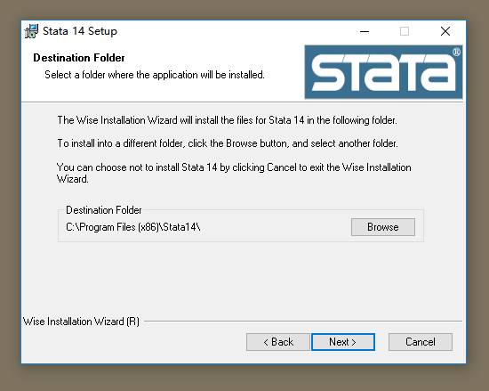
- 第六步，Next：

- 第七步，Next：

- 第八步，正在安装中：

- 第九步，安装完成：

- 第十步，找到刚刚的安装目录，按照图中的方法创建桌面快捷方式：

- 第十一步， 把共享文件夹里面一个名为 stata.lic 的文件复制粘贴到安装目录里面，然后双击刚刚在桌面新建的快捷方式打开 Stata，你会看到下面的错误信息：
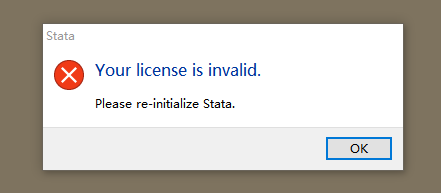
- 不过完全不用担心，点击
OK然后点击下一步：

- 注意这一步里面记得取消
Register Stata online：

- 最后，安装完成，记得选择
Disable automatic update checking，因为它很烦人：
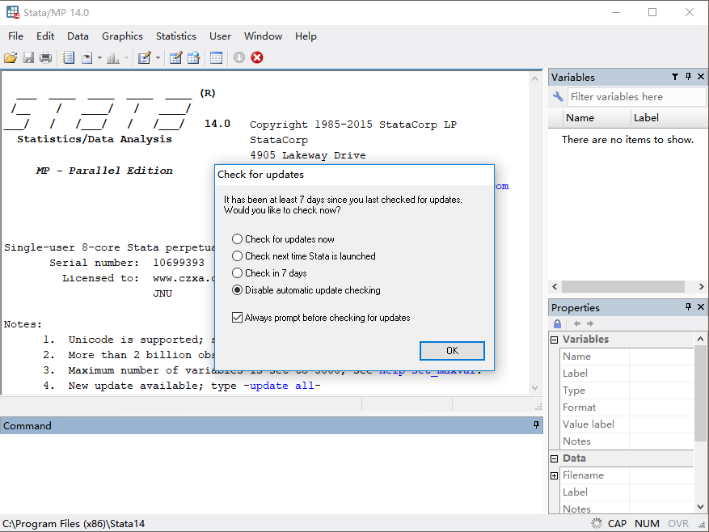
- 然后，我们可以运行一个简单的更新命令：
update all你会发现运行出错，这就说明！这个 Stata 是盗版的！所以别声张！
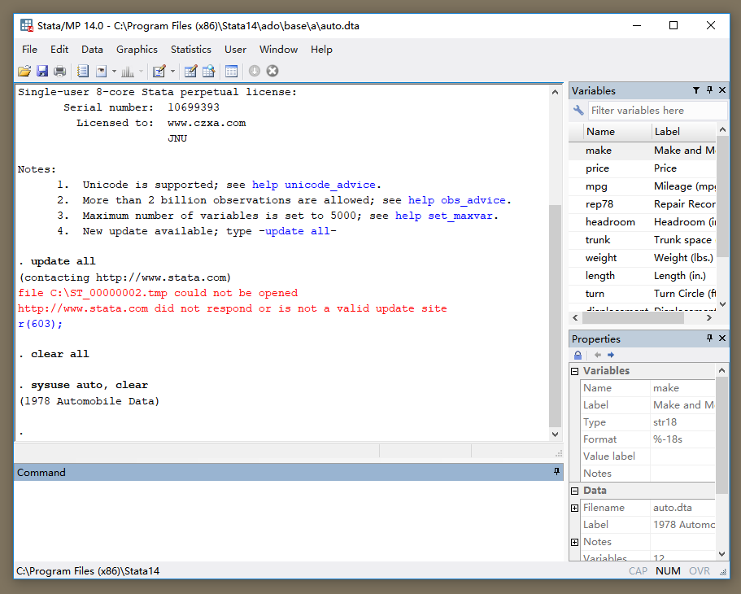
2.2.2 Mac OS
Mac OS 上安装 Stata14 比 Windows 上的安装要简单很多，因此我不再赘述。下面仅仅展示一下 Mac 版本的 Stata14：

另外 Mac 版本的 Stata14 可以非常方便的更改工作目录：

2.3 Stata15 的安装
2.3.1 Windows OS
Stata15 的安装过程和 Stata14 的基本一样： + 第一步，点击打开 exe 文件：

- Next：
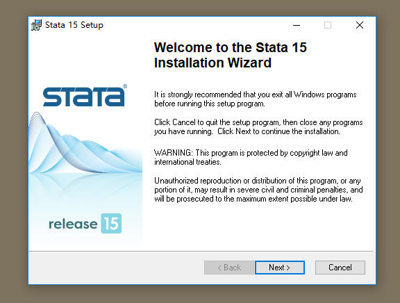


- 注意！这里要选择 SE：


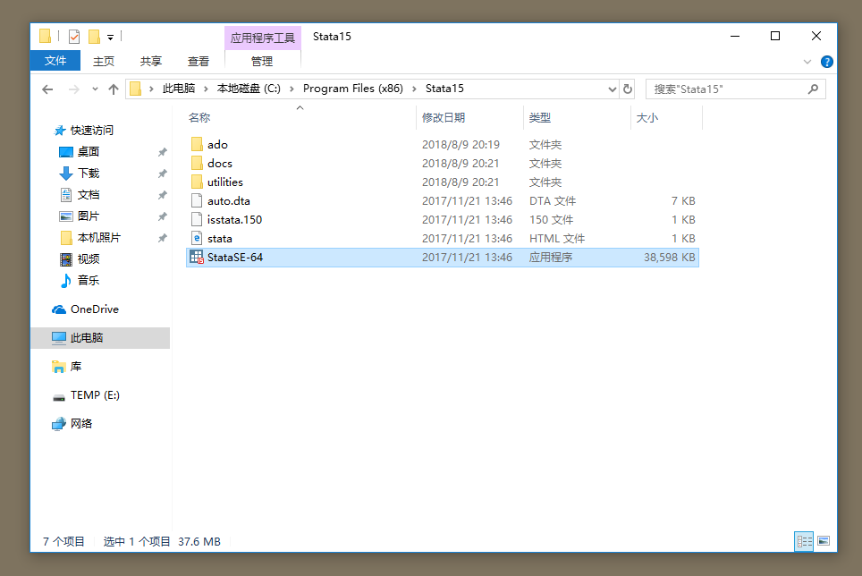


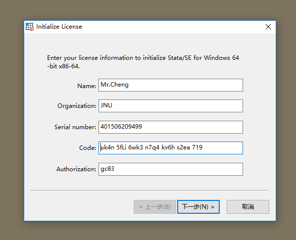
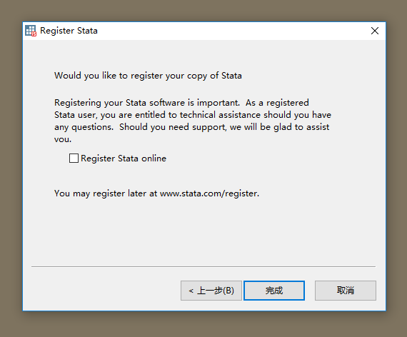

- 另外，如果你忘记关闭自动检查，可以使用如下操作关闭：


2.3.2 Mac OS
同样，这里仅仅展示 Mac 版本的 Stata15SE：

此外 Mac 版本的 Stata 还支持在终端使用（刚刚的 Stata14 也支持），首先需要安装终端工具：

然后打开终端，输入stata-se回车：

是不是非常酷！当然不仅仅是酷，这个功能极大的拓展了 Stata 的能力！
2.4 Stata 代码编辑器的配置
同样，这里只详细介绍 Windows 系统上的安装和配置，Mac 系统的安装配置流程相似且更加简单。（以连接 Stata15 为例）
2.4.1 Windows OS
2.4.1.1 安装与配置
首先到 Sublime Text3 的官网下载最新版本的 Sublime Text3，官网地址为：Sublime Text3，Windows 版本的下载连接为：Windows 64 bit + 下载完成后点击打开，记得勾选这个：

- 安装完成之后的界面如下（我打开了一个 Stata 的 ado 文件），点击 Tools => Install Package Control，这个会安装一个包控制工具：

- 稍等片刻即安装完成（注意电脑要联网）：

- 下面我们需要安装一些包。选择 Preferences => Package Control：
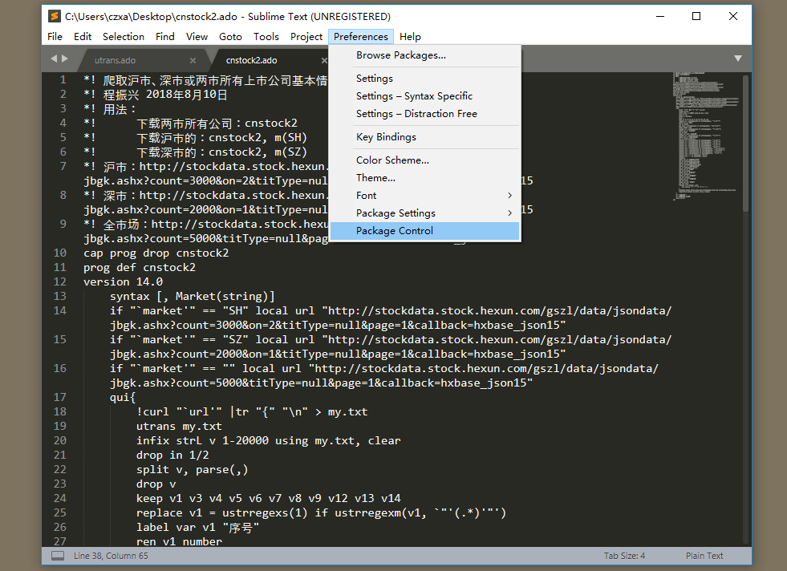
- 选择 Install Packages：

- 然后在输入框里输入 pywin32 点击安装这个插件

- 稍等片刻即可安装完成，同样的方式安装 StataEditor 和 ChineseLocalizations 插件，第二个插件是一个汉化的插件：


- 接下来配置 StataEditor 插件，把 Setting-Default 中的内容复制粘贴到 Setting-User 中：

- 然后在 Setting-User 中改动如下内容：

为（这里修改的是你的 Stata 的安装位置、版本和字符编码，前面两个要结合你的实际情况）
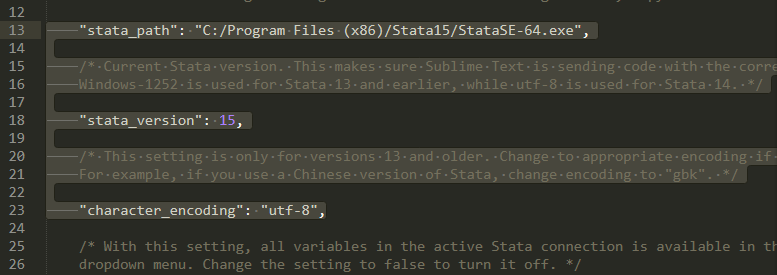
- 配置完成之后点击右下角会弹出一个选择框，从框中找到 Stata 选中，然后你就会发现代码变成彩色的了！这就是代码高亮。

不过现在的代码还是不能直接运行，我们还需要继续进行下面的操作：
按 Ctrl+`(注意这个键是半角输入模式下的制表符上面的那个键)打开命令窗口输入下面这段代码：
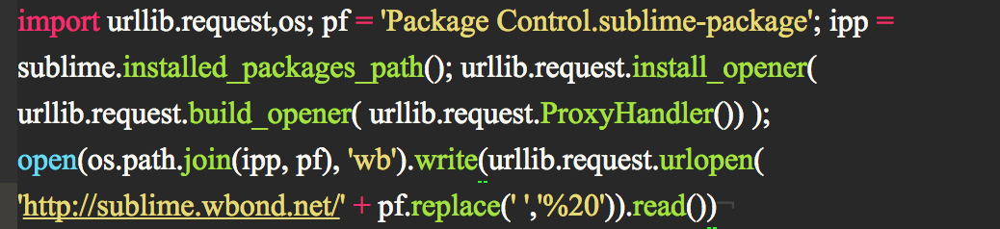
这段代码来自这里：点击跳转
回车运行完之后再次 Ctrl+` 关闭命令窗口即可。
最后我们再去到 Stata15 的安装位置，右键 StataSE-64.exe 创建快捷方式，然后右键点击刚刚创建的快捷方式选择属性打开做如下修改，也就是在目标的最后加上
/Register：

- 再点击高级勾选：
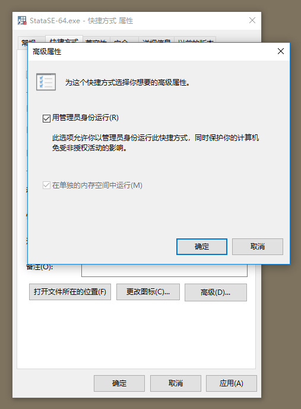
- 确定所有，回到安装位置，右键快捷方式选择以管理员的身份运行，然后可以了。

运行完之后你就会发现这个快捷方式无法启动 Stata 了，重新新建一个快捷方式即可。
2.4.1.2 使用演示
关掉 Sublime，首先新建一个 do 文档（建立方法是新建一个 txt 文档然后把扩展名改为 do 即可）
现在它的默认打开方式是 Stata，我们右键打开属性修改一下：
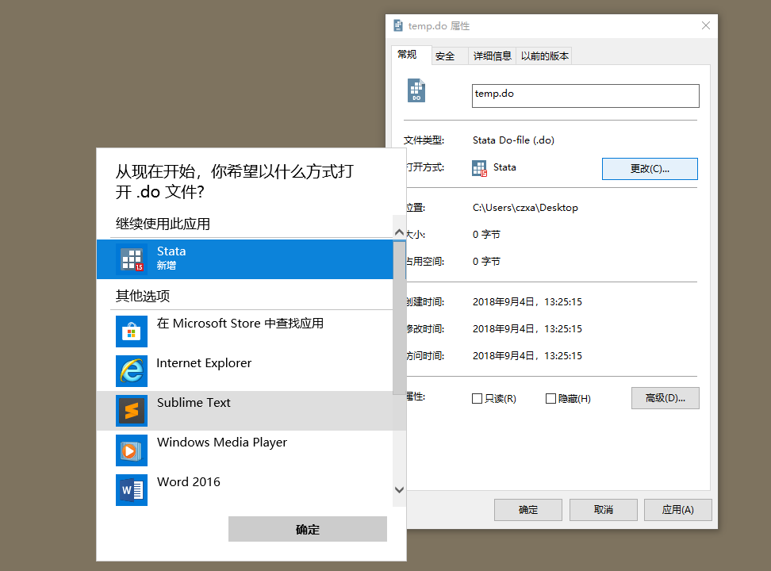
然后点击确定就可以了。
打开它！我写了一个比较规范的 do-file：
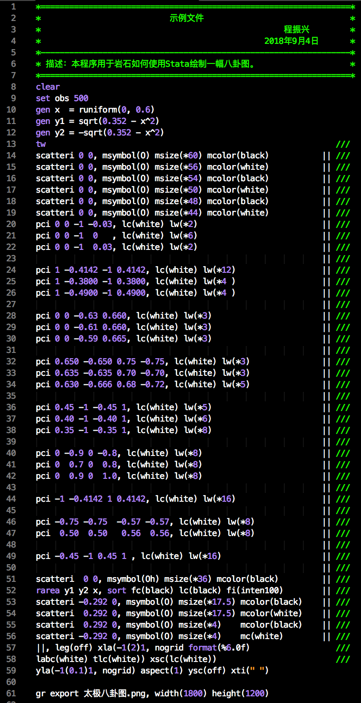
我的注释是绿色的，是我自己调的色。
我们要记住的第一个快捷键就是：
Ctrl+D——运行全部或选中的代码。选择实力文件夹中的所有代码，然后按
Ctrl+D即可绘制出一副太极八卦图了：

太极八卦图
2.4.1.3 太极八卦图的绘制代码
clear
* 安装绘图主题
ssc install blindschemes, replace all
* 设置绘图主题为 plotplain
set scheme plotplain
set obs 500
gen x = runiform(0, 0.6)
gen y1 = sqrt(0.352 - x^2)
gen y2 = -sqrt(0.352 - x^2)
tw ///
scatteri 0 0, msymbol(O) msize(*60) mcolor(black) || ///
scatteri 0 0, msymbol(O) msize(*56) mcolor(white) || ///
scatteri 0 0, msymbol(O) msize(*54) mcolor(black) || ///
scatteri 0 0, msymbol(O) msize(*50) mcolor(white) || ///
scatteri 0 0, msymbol(O) msize(*48) mcolor(black) || ///
scatteri 0 0, msymbol(O) msize(*44) mcolor(white) || ///
pci 0 0 -1 -0.03, lc(white) lw(*2) || ///
pci 0 0 -1 0, lc(white) lw(*6) || ///
pci 0 0 -1 0.03, lc(white) lw(*2) || ///
|| ///
pci 1 -0.4142 -1 0.4142, lc(white) lw(*12) || ///
pci 1 -0.38 -1 0.38, lc(white) lw(*4) || ///
pci 1 -0.49 -1 0.49, lc(white) lw(*4) || ///
|| ///
pci 0 0 -0.63 0.66, lc(white) lw(*3) || ///
pci 0 0 -0.61 0.66, lc(white) lw(*3) || ///
pci 0 0 -0.59 0.665, lc(white) lw(*3) || ///
|| ///
pci 0.65 -0.65 0.75 -0.75, lc(white) lw(*3) || ///
pci 0.635 -0.635 0.7 -0.7, lc(white) lw(*3) || ///
pci 0.63 -0.666 0.68 -0.72, lc(white) lw(*5) || ///
|| ///
pci 0.45 -1 -0.45 1, lc(white) lw(*5) || ///
pci 0.4 -1 -0.4 1, lc(white) lw(*6) || ///
pci 0.35 -1 -0.35 1, lc(white) lw(*8) || ///
|| ///
pci 0 -0.9 0 -0.8, lc(white) lw(*8)|| ///
pci 0 0.7 0 0.8, lc(white) lw(*8)|| ///
pci 0 0.9 0 1, lc(white) lw(*8)|| ///
|| ///
pci -1 -0.4142 1 0.4142, lc(white) lw(*16) || ///
|| ///
pci -0.75 -0.75 -0.57 -0.57, lc(white) lw(*8) || ///
pci 0.5 0.5 0.56 0.56, lc(white) lw(*8) || ///
|| ///
pci -0.45 -1 0.45 1 , lc(white) lw(*16) || ///
|| ///
scatteri 0 0, msymbol(Oh) msize(*36) mcolor(black) || ///
rarea y1 y2 x, sort fc(black) lc(black) fi(inten100) || ///
scatteri -0.292 0, msymbol(O) msize(*17.5) mcolor(black) || ///
scatteri 0.292 0, msymbol(O) msize(*17.5) mcolor(white) || ///
scatteri 0.292 0, msymbol(O) msize(*4) mcolor(black) || ///
scatteri -0.292 0, msymbol(O) msize(*4) mc(white) || ///
||, leg(off) xla(-1(2)1, nogrid format(%6.0f) labc(white) ///
tlc(white)) xsc(lc(white)) yla(-1(0.1)1, nogrid) ///
aspect(1) ysc(off) xti(" ")
gr export 太极八卦图.png, width(1800) height(1200)
2.4.2 Mac OS
Mac 上的安装配置更加简单。不再介绍。
2.5 常用 shell/Dos 命令安装
shell 和 Dos 分别是 Mac/Linux 和 Windows 上对命令解释器的称谓。Stata 的一个最常见的拓展使用就是调用 shell 命令和 Dos 命令。为了简单，下面统称为 shell 命令。在 Windows 系统上，Dos 命令可以在 cmd——命令提示符中运行，而 shell 命令可以在 Mac 的终端中运行。Stata 可以通过!或者 shell 调用这些工具。其中最常用的莫过于curl命令了。这款命令非常强大，可以模拟浏览器操作。在使用 Stata 爬数据的时候经常使用。这里介绍一下如何安装这款工具。
2.5.1 Windows OS
- 首先打开命令提示符,输入
where powershell找到 powershell.exe 的位置, 然后找到它右键选择以管理员身份打开. 然后就会弹出来一个蓝色的命令行界面. - 然后可以安装一个包管理工具 choco(这里参考了这篇文章《在 windows 下使用 choco 作为包管理工具》). 在以管理员身份打开的 powershell 里依次输入下面几句命令:
Set-ExecutionPolicy RemoteSigned
* 安装choco
iwr https://chocolatey.org/install.ps1 -UseBasicParsing | iex
* 安装curl
choco install curl这样你就安装好了 Windows 下一款非常好用的包管理工具，此外，你如果想安装其他命令，可以在这个网站检索：https://chocolatey.org/packages。推荐安装wget和axel，这两个是非常好用的下载工具。axel是个多线程下载工具，下载电影什么的都不是问题。
- 另外有时候也会用到 tr 命令和 sed 命令：这两个命令的下载链接分别为：
tr：http://bcn.bathome.net/tool/tr.exe
sed：http://bcn.bathome.net/tool/4.7/sed.exe
推荐大家一个非常全的批处理命令库：http://www.bathome.net/s/tool/
注意上面下面的命令都不是双击安装的，把下载到的 exe 文件放入C:\Windows\System32即可全局使用。
2.5.2 Mac OS
如果你是 Mac 用户，那你非常幸运，因为上面提到的 curl、tr 和 sed 都是自带的。
2.6 Stata 更新
Stata 公司定期会出更新包修复一些 Bug 或者添加一些新的功能，及时更新 Stata 也是有必要的。由于我们的 Stata 是盗版的，所以只能采取离线更新。即首先下载离线更新包，然后更新： 离线更新包的下载地址为https://www.stata.com/support/updates/，为了方便大家更新，我这里直接给出各个版本的下载链接
下载完成之后会得到一个 zip 文件，解压。
下面打开 Stata（根据你的 Stata 版本选择更新包即可）：
在 Command 窗口输入db update并回车，会弹出这个窗口：

然后选择 From alternate location => Browse => 确定：

点击 OK 即可进入更新：

选择 Yes：

然后等待片刻即可更新成功：